1 · Identity
| case | case_AM_five_page_cancelled_cascade | kind | real |
|---|---|---|---|
| input folder | C:\Users\yoav\devel\applitools\bin\tests\images\PDFs\real\edited\case_AM_five_page_cancelled_cascade | ||
| output folder | C:\Users\yoav\testres\pdf\e2e_261006\case_AM_five_page_cancelled_cascade_20261006-135331-23b0f8 | ||
| source | v1.pdf | ||
| render DPI | 96.0 | units | px |
| baseline (v1) | 816×1056 px, axTree=True | checkpoint (v2) | 816×1056 px, axTree=True |
| pipeline commit | ec8da6889 | ||
2 · Ground truth
| type | granularity | v1 page | description | expected region |
|---|---|---|---|---|
| insert | paragraph | 1 | Inserted a paragraph on why the museum matters, after the founding paragraph. The cascade driver: page 1's tail crosses onto page 2. | page 1, from the fourth paragraph down counting the title line -- the inserted paragraph and everything it pushes; the last lines of v1 page 1 open v2 page 2 |
| delete | paragraph | 2 | Deleted the school-parties paragraph in full. It renders on exactly as many lines as the page-1 insert, so the shift it inherited is cancelled here. | page 2, from the top to the third paragraph -- the inherited lines at the top and the removed paragraph; nothing below it moves, and pages 3-5 are identical |
provenance.md
Provenance — case_AM_five_page_cancelled_cascade
Real-PDF labelled pair (Story 1.13). v2.pdf was produced by an external
editor and is frozen; this harness applies no edits of its own.
Pair
- v1 (baseline):
v1.pdf - v2 (checkpoint):
v2.pdf - Alignment + edits GT source: case_AM_five_page_cancelled_cascade.json
v2 authoring — TODO (author fills)
- Editor / tool + version: _TODO (e.g. Acrobat Pro 2024.x / pikepdf 9.x / Word re-export)_
- v1 source distribution / origin: _TODO_
Producers (harness-stamped)
- AXTree extractor:
@applitools/ax-tree@1.6.4viaextract-axtree/extract.mjs(toJSON verbatim, Variant A camelCase) - Rasterizer:
pypdfium2==(see requirements.txt)viarasterize.pyat 96 DPI
Determinism (NFR5)
Both producers are deterministic on frozen PDFs. The only non-determinism is
inside the external @applitools/ax-tree extractor (out of our control); the
harness itself adds no timestamps/RNG.
3 · Algorithm
| matcher | Strict |
|---|---|
| dynamic | Dynamic mode: ON |
| overflow settings | vTol=2 · hTol=2 · maxVSearch=200 · minNbrText=3 · aggregateRawDiffs=True |
4 · Page alignment
5 v1 pages · 5 v2 pages · 5 matched pairs · inserted (v2-only): [] · deleted (v1-only): []
| pair | pages | disposition | classified diffs |
|---|---|---|---|
| 0 | v1 p0 ↔ v2 p0 | modified | 36 |
| 1 | v1 p1 ↔ v2 p1 | modified | 34 |
| 2 | v1 p2 ↔ v2 p2 | identical | 0 |
| 3 | v1 p3 ↔ v2 p3 | identical | 0 |
| 4 | v1 p4 ↔ v2 p4 | identical | 0 |
alignment summary
case: case_AM_five_page_cancelled_cascade v1 pages: 5 v2 pages: 5 matched pairs: 5 v1-only (deleted): [] v2-only (inserted): [] total classified page diffs (over matched pairs): 70 alerting (real diff): 2 [Changed/Inserted/Deleted/Modified — IsAlerting()] dynamic content: 0 [reported, never alerts] document furniture: 0 [reported, never alerts] content shift (overflow): 8 [crossed a page boundary; user confirms] displacement (filtered): 60 [same-page move; not surfaced] dynamic: ON (--no-dynamic to disable) pair v1#0 <-> v2#0: 1888 raw -> 39 aggregated -> 36 classified (pair-00-v1p0-v2p0/: matcher/ raw, overflow/ classified+aggregation) pair v1#1 <-> v2#1: 1264 raw -> 29 aggregated -> 34 classified (pair-01-v1p1-v2p1/: matcher/ raw, overflow/ classified+aggregation) pair v1#2 <-> v2#2: MATCH (no diffs) -> result.json + overflow-trace.json pair v1#3 <-> v2#3: MATCH (no diffs) -> result.json + overflow-trace.json pair v1#4 <-> v2#4: MATCH (no diffs) -> result.json + overflow-trace.json
timeline
- MODIFIED v1#0 <-> v2#0 (modified)
- MODIFIED v1#1 <-> v2#1 (modified)
- MATCH v1#2 <-> v2#2 (identical)
- MATCH v1#3 <-> v2#3 (identical)
- MATCH v1#4 <-> v2#4 (identical)
Page cells show the overlay visualization (diff/displacement annotations) where available; raw renders otherwise.
overlay legend


5 · Result summary
Emitted records aggregated across 5 pair(s). Pruned records excluded (see Diagnostics).
by DiffCause
by frame
by mechanism
6 · Per-pair detail
Pair 0 v1 p0 ↔ v2 p0 DisplacedDown 32Inserted 1OverflowToNext 3
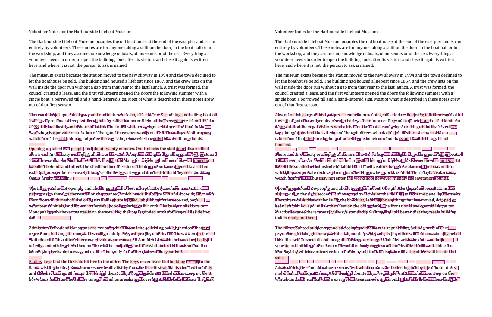
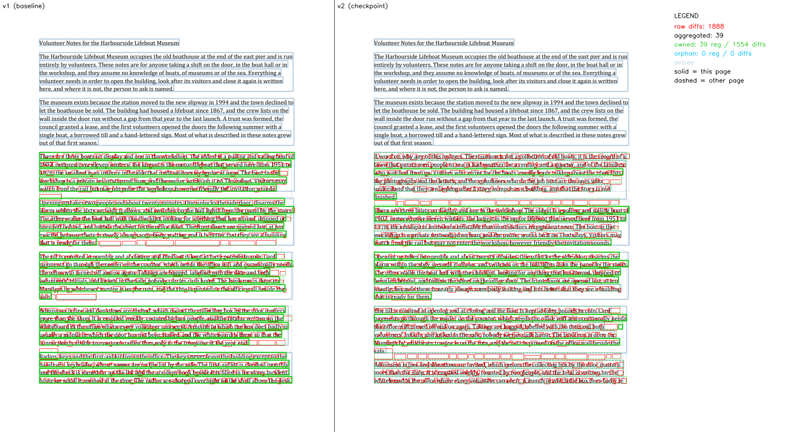
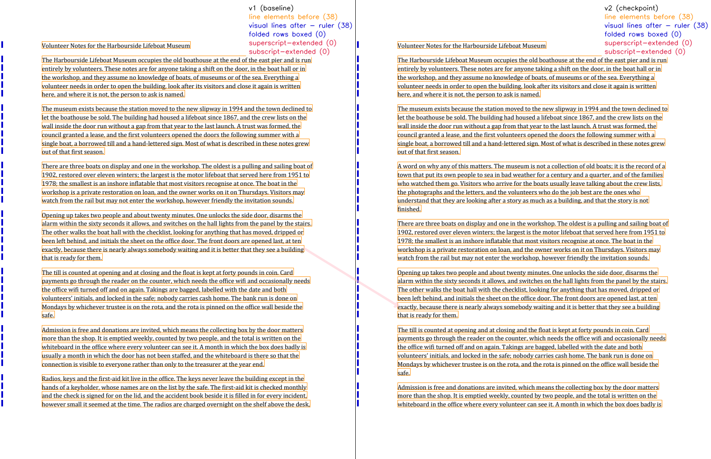
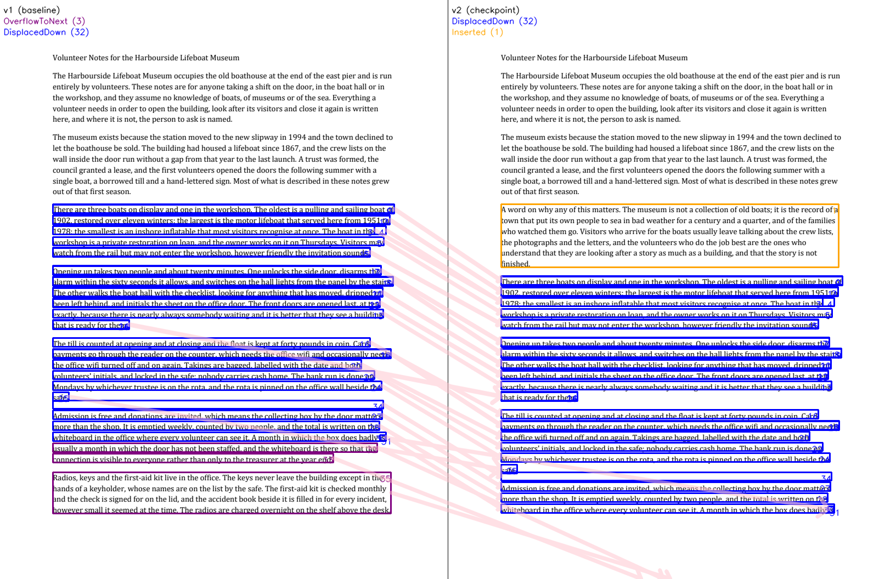
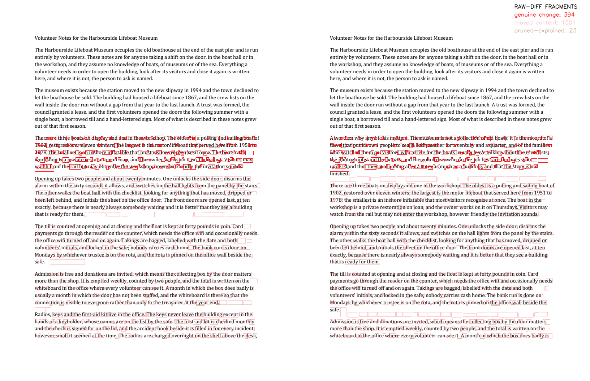
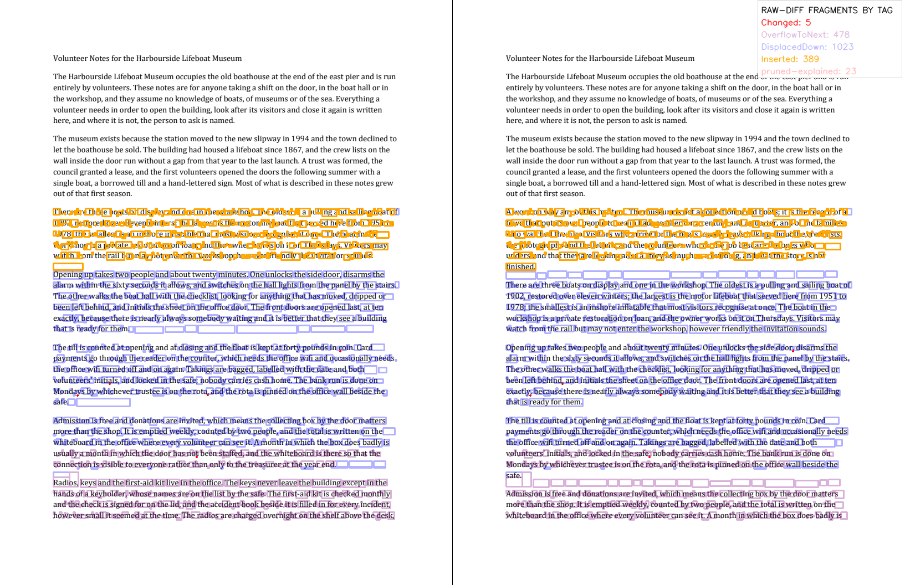
fragment-tags.png verified against fragments.json (1918 fragments; border colour checked on 914 fragment-sides (2922 not checkable: overlapped by other borders))
36 emitted · 34 pruned · raw=1888 · aggregated=39
Verified against the returned PageMatchResult: 36 returned PageDiffs, 36 table rows marked V.
Verification passed: every returned PageDiff is in the table and every non-returned row is pruned.
| ret | id | parent | block | tag | mechanism | frame | baseline rect (v1) | checkpoint rect (v2) | approved off | pruned |
|---|---|---|---|---|---|---|---|---|---|---|
| V | 1927 | 1888 | 0 | DisplacedDown | M1Block | baseline | 96,372 622×16 | 96,503 622×16 | (0, 131) | no |
| V | 1928 | 1888 | 1 | Inserted | None | checkpoint | — | 96,372 615×115 | — | no |
| V | 1929 | 1889 | 2 | DisplacedDown | M1Block | baseline | 96,392 614×16 | 96,523 614×16 | (0, 131) | no |
| V | 1930 | 1890 | 3 | DisplacedDown | M1Block | baseline | 96,412 586×15 | 96,543 586×15 | (0, 131) | no |
| V | 1931 | 1891 | 4 | DisplacedDown | M1Block | baseline | 96,412 607×15 | 96,543 607×15 | (0, 131) | no |
| V | 1932 | 1892 | 5 | DisplacedDown | M1Block | baseline | 96,432 603×15 | 96,563 603×15 | (0, 131) | no |
| V | 1933 | 1893 | 6 | DisplacedDown | M1Block | baseline | 96,451 578×16 | 96,582 578×16 | (0, 131) | no |
| V | 1934 | 1895 | 7 | DisplacedDown | M1Line | baseline | 96,484 598×16 | 96,615 598×16 | (0, 131) | no |
| V | 1935 | 1896 | 8 | DisplacedDown | M1Line | baseline | 96,504 620×16 | 96,635 620×16 | (0, 131) | no |
| V | 1936 | 1897 | 9 | DisplacedDown | M1Line | baseline | 96,373 622×16 | 96,504 622×16 | (0, 131) | no |
| V | 1937 | 1898 | 10 | DisplacedDown | M1Line | baseline | 96,524 601×16 | 96,655 601×16 | (0, 131) | no |
| V | 1938 | 1899 | 11 | DisplacedDown | M1Line | baseline | 96,393 614×16 | 96,524 614×16 | (0, 131) | no |
| V | 1939 | 1900 | 12 | DisplacedDown | M1Line | baseline | 96,544 596×15 | 96,675 596×15 | (0, 131) | no |
| V | 1940 | 1901 | 13 | DisplacedDown | M1Line | baseline | 96,564 602×15 | 96,695 602×15 | (0, 131) | no |
| V | 1941 | 1902 | 14 | DisplacedDown | M1Line | baseline | 96,583 139×16 | 96,714 139×16 | (0, 131) | no |
| V | 1942 | 1903 | 15 | DisplacedDown | M1Line | baseline | 96,452 578×16 | 96,583 578×16 | (0, 131) | no |
| V | 1943 | 1904 | 16 | DisplacedDown | M1Line | baseline | 96,616 578×16 | 96,747 578×16 | (0, 131) | no |
| V | 1944 | 1905 | 17 | DisplacedDown | M1Line | baseline | 96,485 598×16 | 96,616 598×16 | (0, 131) | no |
| V | 1945 | 1906 | 18 | DisplacedDown | M1Line | baseline | 96,636 616×16 | 96,767 616×16 | (0, 131) | no |
| V | 1946 | 1907 | 19 | DisplacedDown | M1Line | baseline | 96,505 620×16 | 96,636 620×16 | (0, 131) | no |
| V | 1947 | 1908 | 20 | DisplacedDown | M1Line | baseline | 96,656 562×16 | 96,787 562×16 | (0, 131) | no |
| V | 1948 | 1909 | 21 | DisplacedDown | M1Line | baseline | 96,525 601×16 | 96,656 601×16 | (0, 131) | no |
| V | 1949 | 1910 | 22 | DisplacedDown | M1Line | baseline | 96,676 586×15 | 96,807 586×15 | (0, 131) | no |
| V | 1950 | 1911 | 23 | DisplacedDown | M1Line | baseline | 96,545 596×15 | 96,676 596×15 | (0, 131) | no |
| V | 1951 | 1912 | 24 | DisplacedDown | M1Line | baseline | 96,695 599×16 | 96,826 599×16 | (0, 131) | no |
| V | 1952 | 1913 | 25 | DisplacedDown | M1Block | baseline | 96,715 29×16 | 96,847 29×16 | (0, 132) | no |
| V | 1953 | 1914 | 26 | DisplacedDown | M1Line | baseline | 96,584 139×16 | 96,715 139×16 | (0, 131) | no |
| V | 1954 | 1915 | 27 | DisplacedDown | M1Block | baseline | 96,748 600×16 | 96,879 600×16 | (0, 131) | no |
| V | 1955 | 1916 | 28 | DisplacedDown | M1Block | baseline | 96,768 595×16 | 96,899 595×16 | (0, 131) | no |
| V | 1956 | 1917 | 29 | DisplacedDown | M1Block | baseline | 96,637 616×16 | 96,768 616×16 | (0, 131) | no |
| V | 1957 | 1918 | 30 | DisplacedDown | M1Block | baseline | 96,788 607×16 | 96,919 607×16 | (0, 131) | no |
| V | 1958 | 1919 | 31 | DisplacedDown | M1Block | baseline | 692,793 10×11 | 692,923 10×11 | (0, 130) | no |
| V | 1959 | 1920 | 32 | OverflowToNext | None | baseline | 96,808 591×16 | — | — | no |
| V | 1960 | 1921 | 33 | OverflowToNext | None | baseline | 96,827 511×16 | — | — | no |
| V | 1961 | 1923 | 34 | DisplacedDown | M1Block | baseline | 96,730 602×15 | 96,861 602×15 | (0, 131) | no |
| V | 1962 | 1923 | 35 | OverflowToNext | Band | baseline | 96,861 616×75 | — | — | no |
| X | 1963 | 1894 | -1 | Changed | None | both | 96,471 54×13 | 96,471 54×13 | — | yes displacement-covered |
| X | 1964 | 1894 | -1 | Inserted | None | checkpoint | — | 96,484 54×3 | — | yes nested-grain |
| X | 1965 | 1920 | -1 | DisplacedDown | M3ScoredBand | baseline | 96,808 591×16 | 96,940 591×16 | (0, 132) | yes overflow-covered |
| X | 1966 | 1921 | -1 | DisplacedDown | M3ScoredBand | baseline | 96,827 511×16 | 96,959 511×16 | (0, 132) | yes overflow-covered |
| X | 1967 | 1922 | -1 | DisplacedDown | M1Block | baseline | 96,696 599×16 | 96,827 599×16 | (0, 131) | yes overflow-covered |
| X | 1968 | 1924 | -1 | OverflowToNext | Band | baseline | 96,880 609×16 | — | — | yes crossing-evicted |
| X | 1969 | 1925 | -1 | OverflowToNext | Band | baseline | 96,900 609×16 | — | — | yes crossing-evicted |
| X | 1970 | 1926 | -1 | OverflowToNext | Band | baseline | 96,920 616×16 | — | — | yes crossing-evicted |
| X | 1971 | 1920 | -1 | Changed | M3ScoredBand | both | 96,808 45×16 | 96,808 45×16 | — | yes crossing-covered |
| X | 1972 | 1920 | -1 | Changed | M3ScoredBand | both | 155,808 40×16 | 155,808 40×16 | — | yes crossing-covered |
| X | 1973 | 1920 | -1 | Changed | M3ScoredBand | both | 215,808 37×16 | 215,808 37×16 | — | yes crossing-covered |
| X | 1974 | 1920 | -1 | Changed | M3ScoredBand | both | 256,808 20×16 | 256,808 20×16 | — | yes crossing-covered |
| X | 1975 | 1920 | -1 | Changed | M3ScoredBand | both | 280,808 29×16 | 280,808 29×16 | — | yes crossing-covered |
| X | 1976 | 1920 | -1 | Changed | M3ScoredBand | both | 312,808 21×16 | 312,808 21×16 | — | yes crossing-covered |
| X | 1977 | 1920 | -1 | Changed | M3ScoredBand | both | 362,808 29×16 | 362,808 29×16 | — | yes crossing-covered |
| X | 1978 | 1920 | -1 | Changed | M3ScoredBand | both | 395,808 45×16 | 395,808 45×16 | — | yes crossing-covered |
| X | 1979 | 1920 | -1 | Changed | M3ScoredBand | both | 444,808 23×16 | 444,808 23×16 | — | yes crossing-covered |
| X | 1980 | 1920 | -1 | Changed | M3ScoredBand | both | 470,808 21×16 | 470,808 21×16 | — | yes crossing-covered |
| X | 1981 | 1920 | -1 | Changed | M3ScoredBand | both | 494,808 72×16 | 494,808 72×16 | — | yes crossing-covered |
| X | 1982 | 1920 | -1 | Changed | M3ScoredBand | both | 583,808 34×16 | 583,808 34×16 | — | yes crossing-covered |
| X | 1983 | 1920 | -1 | Changed | M3ScoredBand | both | 621,808 13×16 | 621,808 13×16 | — | yes crossing-covered |
| X | 1984 | 1920 | -1 | Changed | M3ScoredBand | both | 637,808 26×16 | 637,808 26×16 | — | yes crossing-covered |
| X | 1985 | 1920 | -1 | Changed | M3ScoredBand | both | 96,827 69×16 | 96,827 69×16 | — | yes crossing-covered |
| X | 1986 | 1920 | -1 | Changed | M3ScoredBand | both | 182,827 41×16 | 182,827 41×16 | — | yes crossing-covered |
| X | 1987 | 1920 | -1 | Changed | M3ScoredBand | both | 226,827 13×16 | 226,827 13×16 | — | yes crossing-covered |
| X | 1988 | 1920 | -1 | Changed | M3ScoredBand | both | 243,827 57×16 | 243,827 57×16 | — | yes crossing-covered |
| X | 1989 | 1920 | -1 | Changed | M3ScoredBand | both | 304,827 39×16 | 304,827 39×16 | — | yes crossing-covered |
| X | 1990 | 1920 | -1 | Changed | M3ScoredBand | both | 346,827 28×16 | 346,827 28×16 | — | yes crossing-covered |
| X | 1991 | 1920 | -1 | Changed | M3ScoredBand | both | 378,827 28×16 | 378,827 28×16 | — | yes crossing-covered |
| X | 1992 | 1920 | -1 | Changed | M3ScoredBand | both | 424,827 21×16 | 424,827 21×16 | — | yes crossing-covered |
| X | 1993 | 1920 | -1 | Changed | M3ScoredBand | both | 448,827 59×16 | 448,827 59×16 | — | yes crossing-covered |
| X | 1994 | 1920 | -1 | Changed | M3ScoredBand | both | 526,827 20×16 | 526,827 20×16 | — | yes crossing-covered |
| X | 1995 | 1920 | -1 | Changed | M3ScoredBand | both | 549,827 28×16 | 549,827 28×16 | — | yes crossing-covered |
| X | 1996 | 1920 | -1 | Changed | M3ScoredBand | both | 580,827 27×16 | 580,827 27×16 | — | yes crossing-covered |
Pair 1 v1 p1 ↔ v2 p1 Deleted 1DisplacedDown 28OverflowFromPrev 5
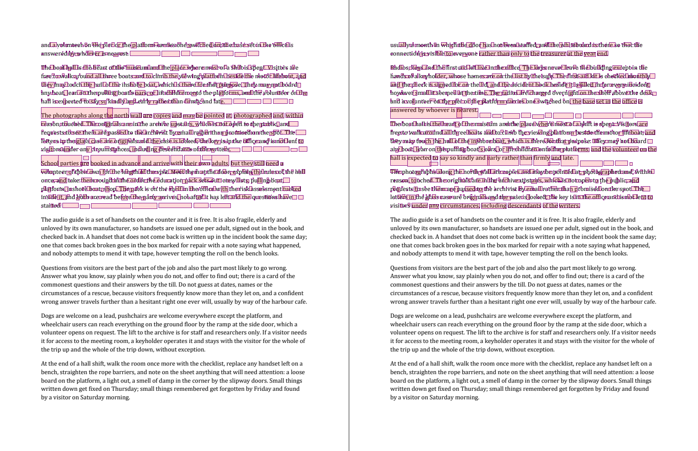
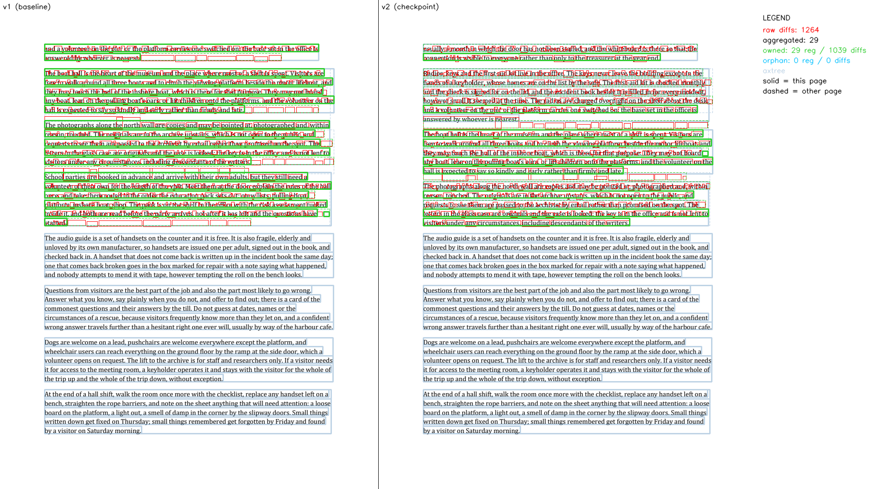
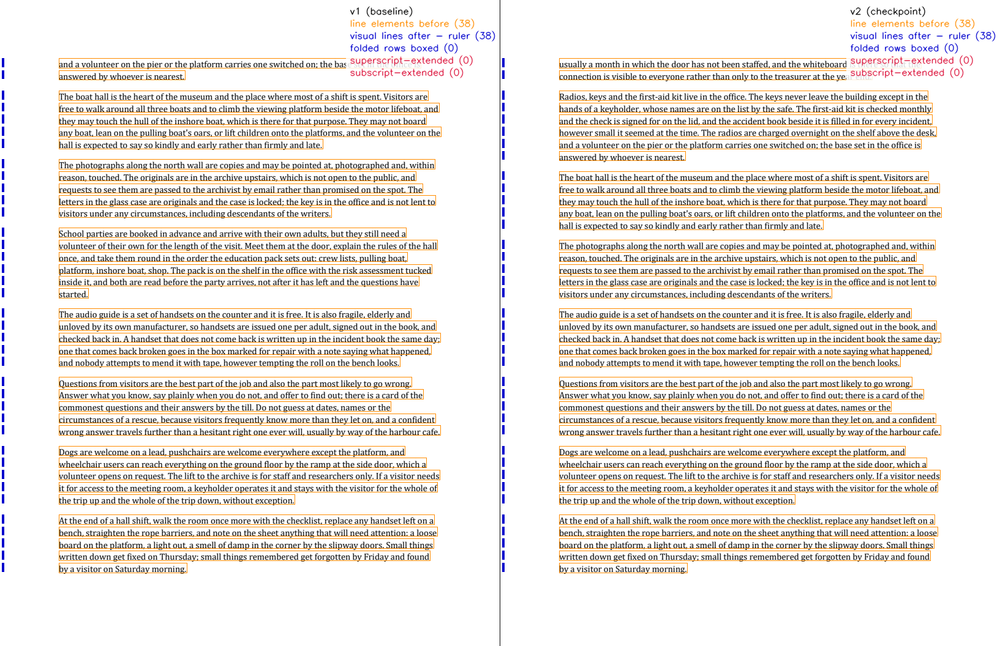
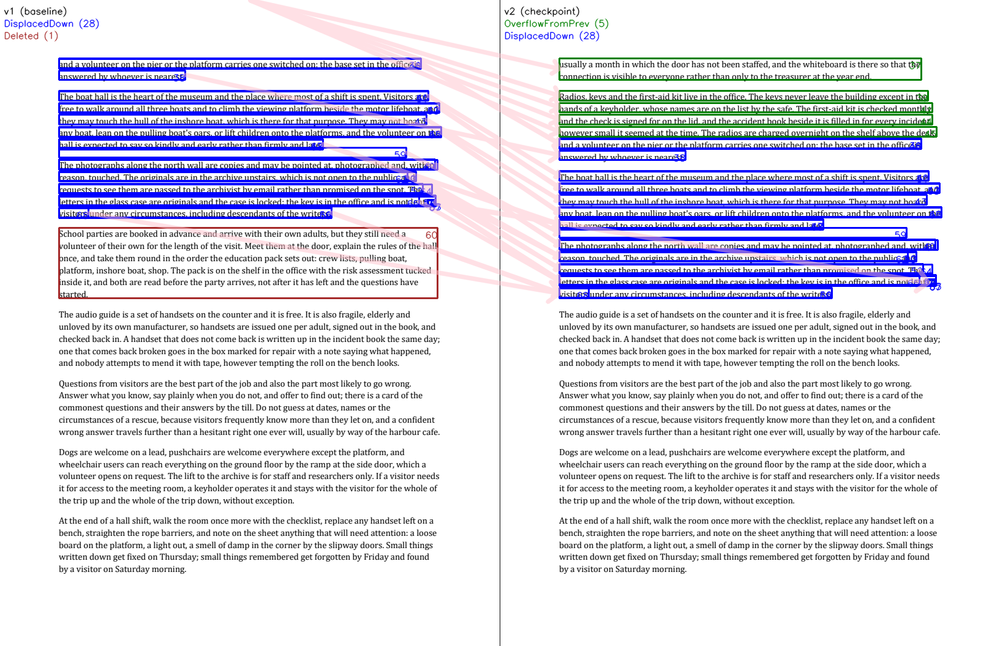
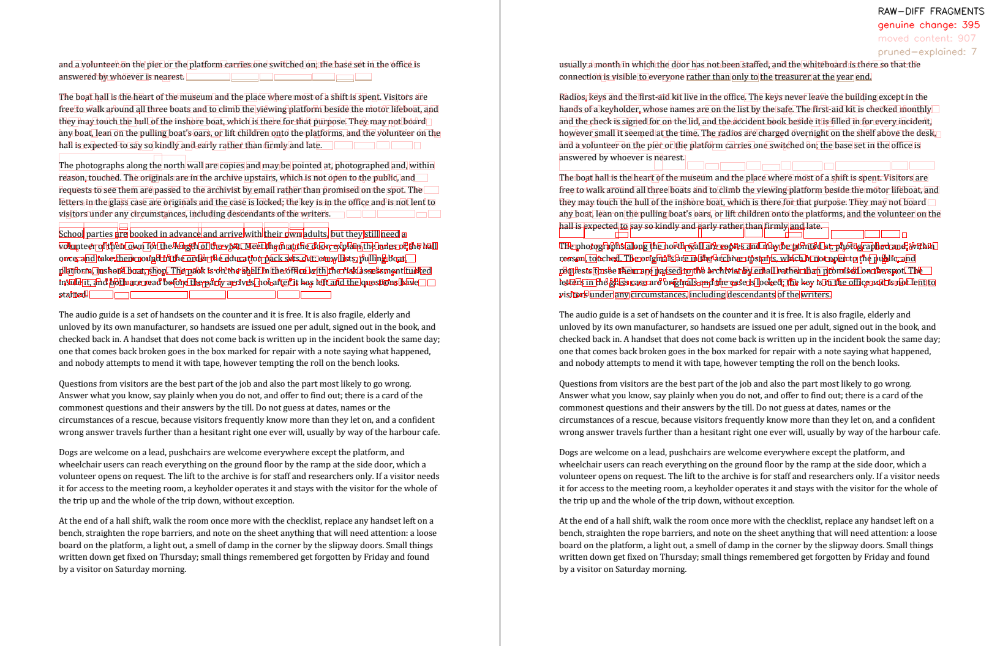
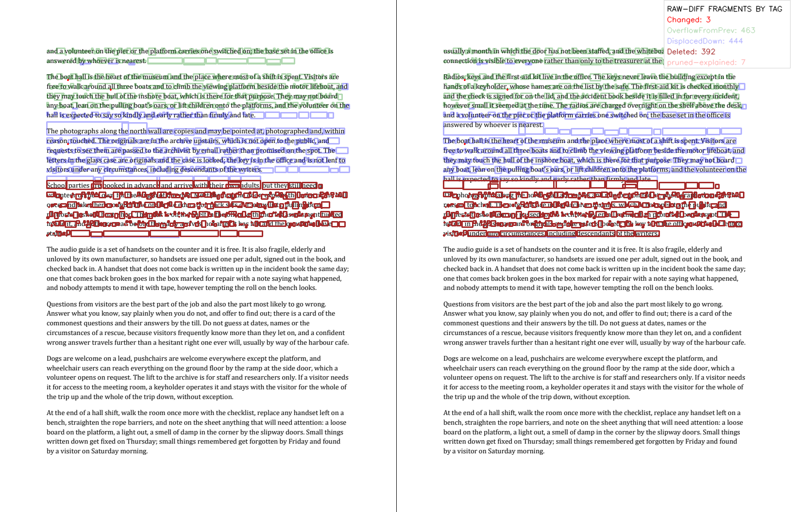
fragment-tags.png verified against fragments.json (1309 fragments; border colour checked on 556 fragment-sides (2062 not checkable: overlapped by other borders); 25 fragment-sides are hidden under the legend panel)
34 emitted · 1 pruned · raw=1264 · aggregated=29
Verified against the returned PageMatchResult: 34 returned PageDiffs, 34 table rows marked V.
Verification passed: every returned PageDiff is in the table and every non-returned row is pruned.
| ret | id | parent | block | tag | mechanism | frame | baseline rect (v1) | checkpoint rect (v2) | approved off | pruned |
|---|---|---|---|---|---|---|---|---|---|---|
| V | 1293 | 1264 | 36 | DisplacedDown | M1Block | baseline | 96,95 591×16 | 96,226 591×16 | (0, 131) | no |
| V | 1294 | 1264 | 37 | OverflowFromPrev | Band | checkpoint | — | 96,95 591×35 | — | no |
| V | 1295 | 1265 | 38 | DisplacedDown | M1Block | baseline | 96,115 206×15 | 96,246 206×15 | (0, 131) | no |
| V | 1296 | 1267 | 39 | OverflowFromPrev | None | checkpoint | — | 96,148 602×16 | — | no |
| V | 1297 | 1267 | 40 | DisplacedDown | M1Block | baseline | 96,148 603×16 | 96,279 603×16 | (0, 131) | no |
| V | 1298 | 1268 | 41 | OverflowFromPrev | None | checkpoint | — | 96,168 609×15 | — | no |
| V | 1299 | 1268 | 42 | DisplacedDown | M1Block | baseline | 96,168 621×15 | 96,299 621×15 | (0, 131) | no |
| V | 1300 | 1269 | 43 | DisplacedDown | M1Block | baseline | 96,187 600×16 | 96,318 600×16 | (0, 131) | no |
| V | 1301 | 1269 | 44 | OverflowFromPrev | None | checkpoint | — | 96,187 609×16 | — | no |
| V | 1302 | 1270 | 45 | OverflowFromPrev | None | checkpoint | — | 96,207 616×16 | — | no |
| V | 1303 | 1270 | 46 | DisplacedDown | M1Block | baseline | 96,207 624×16 | 96,338 624×16 | (0, 131) | no |
| V | 1304 | 1271 | 47 | DisplacedDown | M1Block | baseline | 96,227 431×16 | 96,358 431×16 | (0, 131) | no |
| V | 1305 | 1272 | 48 | DisplacedDown | M1Block | baseline | 96,96 591×16 | 96,227 591×16 | (0, 131) | no |
| V | 1306 | 1273 | 49 | DisplacedDown | M1Block | baseline | 96,260 614×16 | 96,391 614×16 | (0, 131) | no |
| V | 1307 | 1274 | 50 | DisplacedDown | M1Block | baseline | 96,280 583×15 | 96,411 583×15 | (0, 131) | no |
| V | 1308 | 1275 | 51 | DisplacedDown | M1Block | baseline | 96,149 603×15 | 96,280 603×15 | (0, 131) | no |
| V | 1309 | 1276 | 52 | DisplacedDown | M1Block | baseline | 96,300 594×15 | 96,431 594×15 | (0, 131) | no |
| V | 1310 | 1277 | 53 | DisplacedDown | M1Block | baseline | 96,169 621×15 | 96,300 621×15 | (0, 131) | no |
| V | 1311 | 1278 | 54 | DisplacedDown | M1Block | baseline | 96,319 615×16 | 96,449 615×16 | (0, 130) | no |
| V | 1312 | 1279 | 55 | DisplacedDown | M1Block | baseline | 698,326 12×10 | 698,456 12×10 | (0, 130) | no |
| V | 1313 | 1280 | 56 | DisplacedDown | M1Block | baseline | 96,339 445×16 | 96,470 445×16 | (0, 131) | no |
| V | 1314 | 1281 | 57 | DisplacedDown | M1Block | baseline | 96,208 624×16 | 96,339 624×16 | (0, 131) | no |
| V | 1315 | 1282 | 58 | DisplacedDown | M1Block | baseline | 96,228 431×16 | 96,359 431×16 | (0, 131) | no |
| V | 1316 | 1283 | 59 | DisplacedDown | M1Block | baseline | 96,241 567×16 | 96,372 567×16 | (0, 131) | no |
| V | 1317 | 1282 | 60 | Deleted | None | baseline | 96,372 618×115 | — | — | no |
| V | 1318 | 1284 | 61 | DisplacedDown | M1Block | baseline | 96,261 618×16 | 96,392 618×16 | (0, 131) | no |
| V | 1319 | 1285 | 62 | DisplacedDown | M1Block | baseline | 96,281 569×15 | 96,412 569×15 | (0, 131) | no |
| V | 1320 | 1286 | 63 | DisplacedDown | M1Block | baseline | 96,281 583×15 | 96,412 583×15 | (0, 131) | no |
| V | 1321 | 1287 | 64 | DisplacedDown | M1Block | baseline | 96,301 609×15 | 96,432 609×15 | (0, 131) | no |
| V | 1322 | 1288 | 65 | DisplacedDown | M1Block | baseline | 96,321 588×16 | 96,451 588×16 | (0, 130) | no |
| V | 1323 | 1289 | 66 | DisplacedDown | M1Block | baseline | 96,321 615×16 | 96,451 615×16 | (0, 130) | no |
| V | 1324 | 1290 | 67 | DisplacedDown | M1Block | baseline | 698,327 12×10 | 698,457 12×10 | (0, 130) | no |
| V | 1325 | 1291 | 68 | DisplacedDown | M1Block | baseline | 96,340 48×16 | 96,471 48×16 | (0, 131) | no |
| V | 1326 | 1292 | 69 | DisplacedDown | M1Block | baseline | 96,340 445×16 | 96,471 445×16 | (0, 131) | no |
| X | 1327 | 1266 | -1 | OverflowFromPrev | Band | checkpoint | — | 96,115 511×15 | — | yes crossing-evicted |
Pair 2 v1 p2 ↔ v2 p2 no diffs
0 emitted · 0 pruned · raw=0 · aggregated=0
Verified against the returned PageMatchResult: 0 returned PageDiffs, 0 table rows marked V.
Verification passed: every returned PageDiff is in the table and every non-returned row is pruned.
no records
Pair 3 v1 p3 ↔ v2 p3 no diffs
0 emitted · 0 pruned · raw=0 · aggregated=0
Verified against the returned PageMatchResult: 0 returned PageDiffs, 0 table rows marked V.
Verification passed: every returned PageDiff is in the table and every non-returned row is pruned.
no records
Pair 4 v1 p4 ↔ v2 p4 no diffs
0 emitted · 0 pruned · raw=0 · aggregated=0
Verified against the returned PageMatchResult: 0 returned PageDiffs, 0 table rows marked V.
Verification passed: every returned PageDiff is in the table and every non-returned row is pruned.
no records
7 · Diagnostics
Pair 0 evidence
Pruned records (34)
| id | tag | reason | rect |
|---|---|---|---|
| 1963 | Changed | displacement-covered | 96,471 54×13 |
| 1964 | Inserted | nested-grain | 96,484 54×3 |
| 1965 | DisplacedDown | overflow-covered | 96,808 591×16 |
| 1966 | DisplacedDown | overflow-covered | 96,827 511×16 |
| 1967 | DisplacedDown | overflow-covered | 96,827 599×16 |
| 1968 | OverflowToNext | crossing-evicted | 96,880 609×16 |
| 1969 | OverflowToNext | crossing-evicted | 96,900 609×16 |
| 1970 | OverflowToNext | crossing-evicted | 96,920 616×16 |
| 1971 | Changed | crossing-covered | 96,808 45×16 |
| 1972 | Changed | crossing-covered | 155,808 40×16 |
| 1973 | Changed | crossing-covered | 215,808 37×16 |
| 1974 | Changed | crossing-covered | 256,808 20×16 |
| 1975 | Changed | crossing-covered | 280,808 29×16 |
| 1976 | Changed | crossing-covered | 312,808 21×16 |
| 1977 | Changed | crossing-covered | 362,808 29×16 |
| 1978 | Changed | crossing-covered | 395,808 45×16 |
| 1979 | Changed | crossing-covered | 444,808 23×16 |
| 1980 | Changed | crossing-covered | 470,808 21×16 |
| 1981 | Changed | crossing-covered | 494,808 72×16 |
| 1982 | Changed | crossing-covered | 583,808 34×16 |
| 1983 | Changed | crossing-covered | 621,808 13×16 |
| 1984 | Changed | crossing-covered | 637,808 26×16 |
| 1985 | Changed | crossing-covered | 96,827 69×16 |
| 1986 | Changed | crossing-covered | 182,827 41×16 |
| 1987 | Changed | crossing-covered | 226,827 13×16 |
| 1988 | Changed | crossing-covered | 243,827 57×16 |
| 1989 | Changed | crossing-covered | 304,827 39×16 |
| 1990 | Changed | crossing-covered | 346,827 28×16 |
| 1991 | Changed | crossing-covered | 378,827 28×16 |
| 1992 | Changed | crossing-covered | 424,827 21×16 |
| 1993 | Changed | crossing-covered | 448,827 59×16 |
| 1994 | Changed | crossing-covered | 526,827 20×16 |
| 1995 | Changed | crossing-covered | 549,827 28×16 |
| 1996 | Changed | crossing-covered | 580,827 27×16 |
Offset search
| rec | tag | candidates | rejected | approved |
|---|---|---|---|---|
| 1927 | DisplacedDown | (0, 130), (0, 131) | (0, 130):pixel-reject | (0, 131) |
| 1929 | DisplacedDown | (0, 130), (0, 131) | (0, 130):pixel-reject | (0, 131) |
| 1930 | DisplacedDown | (0, 130), (0, 131) | (0, 130):pixel-reject | (0, 131) |
| 1931 | DisplacedDown | (0, 130), (0, 131) | (0, 130):pixel-reject | (0, 131) |
| 1932 | DisplacedDown | (0, 130), (0, 131) | (0, 130):pixel-reject | (0, 131) |
| 1933 | DisplacedDown | (0, 130), (0, 131) | (0, 130):pixel-reject | (0, 131) |
| 1934 | DisplacedDown | (0, 130), (0, 131) | (0, 130):pixel-reject | (0, 131) |
| 1935 | DisplacedDown | (0, 130), (0, 131) | (0, 130):pixel-reject | (0, 131) |
| 1936 | DisplacedDown | (0, 130), (0, 131) | (0, 130):pixel-reject | (0, 131) |
| 1937 | DisplacedDown | (0, 130), (0, 131) | (0, 130):pixel-reject | (0, 131) |
| 1938 | DisplacedDown | (0, 130), (0, 131) | (0, 130):pixel-reject | (0, 131) |
| 1939 | DisplacedDown | (0, 130), (0, 131) | (0, 130):pixel-reject | (0, 131) |
| 1940 | DisplacedDown | (0, 129), (0, 130), (0, 131) | (0, 129):pixel-reject, (0, 130):pixel-reject | (0, 131) |
| 1941 | DisplacedDown | (0, 130), (0, 131) | (0, 130):pixel-reject | (0, 131) |
| 1942 | DisplacedDown | (0, 130), (0, 131) | (0, 130):pixel-reject | (0, 131) |
| 1943 | DisplacedDown | (0, 130), (0, 131) | (0, 130):pixel-reject | (0, 131) |
| 1944 | DisplacedDown | (0, 130), (0, 131) | (0, 130):pixel-reject | (0, 131) |
| 1945 | DisplacedDown | (0, 130), (0, 131) | (0, 130):pixel-reject | (0, 131) |
| 1946 | DisplacedDown | (0, 130), (0, 131) | (0, 130):pixel-reject | (0, 131) |
| 1947 | DisplacedDown | (0, 130), (0, 131) | (0, 130):pixel-reject | (0, 131) |
| 1948 | DisplacedDown | (0, 130), (0, 131) | (0, 130):pixel-reject | (0, 131) |
| 1949 | DisplacedDown | (0, 130), (0, 131) | (0, 130):pixel-reject | (0, 131) |
| 1950 | DisplacedDown | (0, 130), (0, 131) | (0, 130):pixel-reject | (0, 131) |
| 1951 | DisplacedDown | (0, 130), (0, 131) | (0, 130):pixel-reject | (0, 131) |
| 1952 | DisplacedDown | (0, 130), (0, 131), (0, 132) | (0, 130):pixel-reject, (0, 131):pixel-reject | (0, 132) |
| 1953 | DisplacedDown | (0, 130), (0, 131) | (0, 130):pixel-reject | (0, 131) |
| 1954 | DisplacedDown | (0, 130), (0, 131) | (0, 130):pixel-reject | (0, 131) |
| 1955 | DisplacedDown | (0, 130), (0, 131) | (0, 130):pixel-reject | (0, 131) |
| 1956 | DisplacedDown | (0, 130), (0, 131) | (0, 130):pixel-reject | (0, 131) |
| 1957 | DisplacedDown | (0, 130), (0, 131) | (0, 130):pixel-reject | (0, 131) |
| 1958 | DisplacedDown | (0, 130), (0, 131), (0, 132), (0, 133), (0, 134), (0, 130) | (0, 130):blank-crop, (0, 131):blank-crop, (0, 132):blank-crop, (0, 133):blank-crop, (0, 134):blank-crop | (0, 130) |
| 1961 | DisplacedDown | (0, 130), (0, 131) | (0, 130):target-blank | (0, 131) |
| 1963 | Changed | (0, 130), (0, 131), (0, 132), (0, 133), (0, 134) | (0, 130):blank-crop, (0, 131):blank-crop, (0, 132):blank-crop, (0, 133):blank-crop, (0, 134):blank-crop | — |
| 1964 | Inserted | (0, 130), (0, 131), (0, 132), (0, 133), (0, 134) | (0, 130):blank-crop, (0, 131):blank-crop, (0, 132):blank-crop, (0, 133):blank-crop, (0, 134):blank-crop | — |
| 1965 | DisplacedDown | (0, 130), (0, 131), (0, 132), (0, 133), (0, 134), (0, 132) | (0, 130):target-blank, (0, 131):target-blank, (0, 132):target-blank, (0, 133):target-blank, (0, 134):target-blank | (0, 132) |
| 1966 | DisplacedDown | (0, 130), (0, 131), (0, 132), (0, 133), (0, 134), (0, 132) | (0, 130):target-blank, (0, 131):target-blank, (0, 132):target-blank, (0, 133):target-blank, (0, 134):target-blank | (0, 132) |
| 1967 | DisplacedDown | (0, 130), (0, 131) | (0, 130):pixel-reject | (0, 131) |
| 1968 | OverflowToNext | (0, 130), (0, 131), (0, 132), (0, 133), (0, 134) | (0, 130):target-blank, (0, 131):target-blank, (0, 132):target-blank, (0, 133):target-blank, (0, 134):target-blank | — |
| 1969 | OverflowToNext | (0, 130), (0, 131), (0, 132), (0, 133), (0, 134) | (0, 130):target-blank, (0, 131):target-blank, (0, 132):target-blank, (0, 133):target-blank, (0, 134):target-blank | — |
| 1970 | OverflowToNext | (0, 130), (0, 131), (0, 132), (0, 133), (0, 134) | (0, 130):out-of-bounds, (0, 131):out-of-bounds, (0, 132):out-of-bounds, (0, 133):out-of-bounds, (0, 134):out-of-bounds | — |
Causal field
crossBase=0 · bottomShift=132 · crossForward=True · crossBackward=False
| top | dy | order | block key |
|---|---|---|---|
| 0 | 0 | 0 | Volunteer Notes for the Harbourside Lifeboat Museum |
| 111 | 0 | 1 | The Harbourside Lifeboat Museum occupies the old boathouse at the end of the east pier and is run entirely by volunteers. These notes are for anyone taking a shift on the door, in the boat hall or in the workshop, and they assume no knowledge of boats, of museums or of the sea. Everything a volunteer needs in order to open the building, look after its visitors and close it again is written here, and where it is not, the person to ask is named. |
| 223 | 0 | 2 | The museum exists because the station moved to the new slipway in 1994 and the town declined to let the boathouse be sold. The building had housed a lifeboat since 1867, and the crew lists on the wall inside the door run without a gap from that year to the last launch. A trust was formed, the council granted a lease, and the first volunteers opened the doors the following summer with a single boat, a borrowed till and a hand-lettered sign. Most of what is described in these notes grew out of that first season. |
| 355 | 132 | 4 | There are three boats on display and one in the workshop. The oldest is a pulling and sailing boat of 1902, restored over eleven winters; the largest is the motor lifeboat that served here from 1951 to 1978; the smallest is an inshore inflatable that most visitors recognise at once. The boat in the workshop is a private restoration on loan, and the owner works on it on Thursdays. Visitors may watch from the rail but may not enter the workshop, however friendly the invitation sounds. |
| 467 | 132 | 5 | Opening up takes two people and about twenty minutes. One unlocks the side door, disarms the alarm within the sixty seconds it allows, and switches on the hall lights from the panel by the stairs. The other walks the boat hall with the checklist, looking for anything that has moved, dripped or been left behind, and initials the sheet on the office door. The front doors are opened last, at ten exactly, because there is nearly always somebody waiting and it is better that they see a building that is ready for them. |
| 599 | 132 | 6 | The till is counted at opening and at closing and the float is kept at forty pounds in coin. Card payments go through the reader on the counter, which needs the office wifi and occasionally needs the office wifi turned off and on again. Takings are bagged, labelled with the date and both volunteers' initials, and locked in the safe; nobody carries cash home. The bank run is done on Mondays by whichever trustee is on the rota, and the rota is pinned on the office wall beside the safe. |
| 731 | 132 | 7 | Admission is free and donations are invited, which means the collecting box by the door matters more than the shop. It is emptied weekly, counted by two people, and the total is written on the whiteboard in the office where every volunteer can see it. A month in which the box does badly is usually a month in which the door has not been staffed, and the whiteboard is there so that the connection is visible to everyone rather than only to the treasurer at the year end. |
Pair 1 evidence
Pruned records (1)
| id | tag | reason | rect |
|---|---|---|---|
| 1327 | OverflowFromPrev | crossing-evicted | 96,115 511×15 |
Offset search
| rec | tag | candidates | rejected | approved |
|---|---|---|---|---|
| 1293 | DisplacedDown | (0, 130), (0, 131) | (0, 53):out-of-tolerance, (0, 130):pixel-reject | (0, 131) |
| 1295 | DisplacedDown | (0, 130), (0, 131) | (0, 53):out-of-tolerance, (0, 130):pixel-reject | (0, 131) |
| 1297 | DisplacedDown | (0, 130), (0, 131) | (0, 53):out-of-tolerance, (0, 130):pixel-reject | (0, 131) |
| 1299 | DisplacedDown | (0, 130), (0, 131) | (0, 53):out-of-tolerance, (0, 130):pixel-reject | (0, 131) |
| 1300 | DisplacedDown | (0, 130), (0, 131) | (0, 53):out-of-tolerance, (0, 130):pixel-reject | (0, 131) |
| 1303 | DisplacedDown | (0, 130), (0, 131) | (0, 53):out-of-tolerance, (0, 130):pixel-reject | (0, 131) |
| 1304 | DisplacedDown | (0, 130), (0, 131) | (0, 53):out-of-tolerance, (0, 130):pixel-reject | (0, 131) |
| 1305 | DisplacedDown | (0, 130), (0, 131) | (0, 53):out-of-tolerance, (0, 130):pixel-reject | (0, 131) |
| 1306 | DisplacedDown | (0, 130), (0, 131) | (0, 53):out-of-tolerance, (0, 130):pixel-reject | (0, 131) |
| 1307 | DisplacedDown | (0, 130), (0, 131) | (0, 130):pixel-reject | (0, 131) |
| 1308 | DisplacedDown | (0, 130), (0, 131) | (0, 130):pixel-reject | (0, 131) |
| 1309 | DisplacedDown | (0, 130), (0, 131) | (0, 130):pixel-reject | (0, 131) |
| 1310 | DisplacedDown | (0, 130), (0, 131) | (0, 130):pixel-reject | (0, 131) |
| 1311 | DisplacedDown | (0, 130) | — | (0, 130) |
| 1312 | DisplacedDown | (0, 130), (0, 131), (0, 132), (0, 133), (0, 134), (0, 130) | (0, 130):blank-crop, (0, 131):blank-crop, (0, 132):blank-crop, (0, 133):blank-crop, (0, 134):blank-crop | (0, 130) |
| 1313 | DisplacedDown | (0, 130), (0, 131) | (0, 130):pixel-reject | (0, 131) |
| 1314 | DisplacedDown | (0, 130), (0, 131) | (0, 130):pixel-reject | (0, 131) |
| 1315 | DisplacedDown | (0, 130), (0, 131) | (0, 130):pixel-reject | (0, 131) |
| 1316 | DisplacedDown | (0, 130), (0, 131) | (0, 130):pixel-reject | (0, 131) |
| 1318 | DisplacedDown | (0, 130), (0, 131) | (0, 130):pixel-reject | (0, 131) |
| 1319 | DisplacedDown | (0, 130), (0, 131) | (0, 130):pixel-reject | (0, 131) |
| 1320 | DisplacedDown | (0, 130), (0, 131) | (0, 130):pixel-reject | (0, 131) |
| 1321 | DisplacedDown | (0, 130), (0, 131) | (0, 130):pixel-reject | (0, 131) |
| 1322 | DisplacedDown | (0, 130) | — | (0, 130) |
| 1323 | DisplacedDown | (0, 130) | — | (0, 130) |
| 1324 | DisplacedDown | (0, 130) | — | (0, 130) |
| 1325 | DisplacedDown | (0, 130), (0, 131) | (0, 130):pixel-reject | (0, 131) |
| 1326 | DisplacedDown | (0, 130), (0, 131) | (0, 130):pixel-reject | (0, 131) |
| 1327 | OverflowFromPrev | (0, 51), (0, 52), (0, 53), (0, 54), (0, 55) | (0, 51):target-blank, (0, 52):target-blank, (0, 53):target-blank, (0, 54):target-blank, (0, 55):target-blank | — |
Causal field
crossBase=53 · bottomShift=0 · crossForward=True · crossBackward=False
| top | dy | order | block key |
|---|---|---|---|
| 0 | 53 | 1 | and a volunteer on the pier or the platform carries one switched on; the base set in the office is answered by whoever is nearest. |
| 130 | 132 | 2 | The boat hall is the heart of the museum and the place where most of a shift is spent. Visitors are free to walk around all three boats and to climb the viewing platform beside the motor lifeboat, and they may touch the hull of the inshore boat, which is there for that purpose. They may not board any boat, lean on the pulling boat's oars, or lift children onto the platforms, and the volunteer on the hall is expected to say so kindly and early rather than firmly and late. |
| 243 | 132 | 3 | The photographs along the north wall are copies and may be pointed at, photographed and, within reason, touched. The originals are in the archive upstairs, which is not open to the public, and requests to see them are passed to the archivist by email rather than promised on the spot. The letters in the glass case are originals and the case is locked; the key is in the office and is not lent to visitors under any circumstances, including descendants of the writers. |
| 355 | 0 | 5 | The audio guide is a set of handsets on the counter and it is free. It is also fragile, elderly and unloved by its own manufacturer, so handsets are issued one per adult, signed out in the book, and checked back in. A handset that does not come back is written up in the incident book the same day; one that comes back broken goes in the box marked for repair with a note saying what happened, and nobody attempts to mend it with tape, however tempting the roll on the bench looks. |
| 599 | 0 | 6 | Questions from visitors are the best part of the job and also the part most likely to go wrong. Answer what you know, say plainly when you do not, and offer to find out; there is a card of the commonest questions and their answers by the till. Do not guess at dates, names or the circumstances of a rescue, because visitors frequently know more than they let on, and a confident wrong answer travels further than a hesitant right one ever will, usually by way of the harbour cafe. |
| 711 | 0 | 7 | Dogs are welcome on a lead, pushchairs are welcome everywhere except the platform, and wheelchair users can reach everything on the ground floor by the ramp at the side door, which a volunteer opens on request. The lift to the archive is for staff and researchers only. If a visitor needs it for access to the meeting room, a keyholder operates it and stays with the visitor for the whole of the trip up and the whole of the trip down, without exception. |
| 824 | 0 | 8 | At the end of a hall shift, walk the room once more with the checklist, replace any handset left on a bench, straighten the rope barriers, and note on the sheet anything that will need attention: a loose board on the platform, a light out, a smell of damp in the corner by the slipway doors. Small things written down get fixed on Thursday; small things remembered get forgotten by Friday and found by a visitor on Saturday morning. |
Pair 2 evidence
Causal field
crossBase=0 · bottomShift=0 · crossForward=False · crossBackward=False
empty field (no AXTree blocks)
Pair 3 evidence
Causal field
crossBase=0 · bottomShift=0 · crossForward=False · crossBackward=False
empty field (no AXTree blocks)
Pair 4 evidence
Causal field
crossBase=0 · bottomShift=0 · crossForward=False · crossBackward=False
empty field (no AXTree blocks)
8 · Artifacts index
- run.json (run manifest)
- alignment.json (page alignment)
- overflow-trace.json · raw-diff.png · overflow.png · change-vs-move.png · fragment-tags.png · aggregation.png · visual-lines.png
- overflow-trace.json · raw-diff.png · overflow.png · change-vs-move.png · fragment-tags.png · aggregation.png · visual-lines.png
- overflow-trace.json
- overflow-trace.json
- overflow-trace.json
- result.txt (output summary)
- edits.json (input)
- provenance.md (input)
- v1.pdf (input)
- v2.pdf (input)
- v1-axtree.json (input)
- v2-axtree.json (input)
input: C:\Users\yoav\devel\applitools\bin\tests\images\PDFs\real\edited\case_AM_five_page_cancelled_cascade
output: C:\Users\yoav\testres\pdf\e2e_261006\case_AM_five_page_cancelled_cascade_20261006-135331-23b0f8
Links open these local files in a new tab when viewing the local report.html; a shared/published copy cannot reach files on your machine.